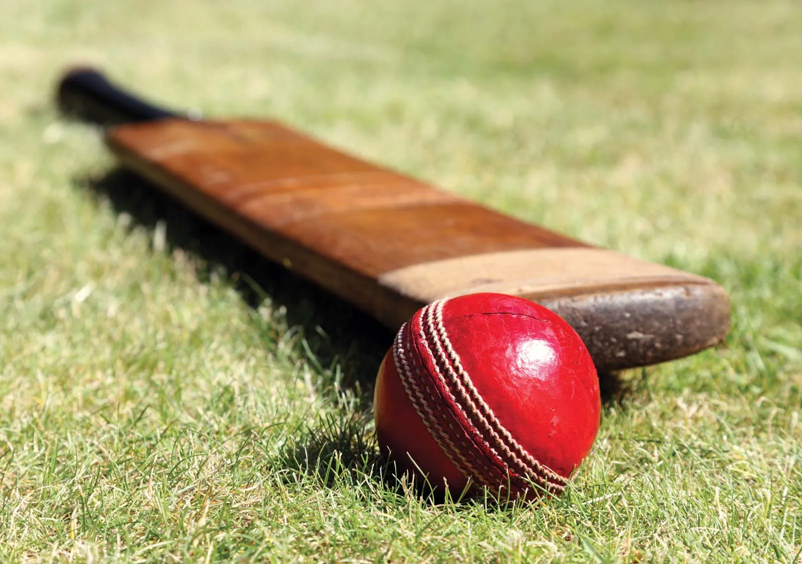

These are Top Three Trending Topic These Days
1. indian Prime Minister Narender Modi

Modi was born and raised in Vadnagar in northeastern Gujarat, where he completed his secondary education.
He was introduced to the RSS at the age of eight. At the age of 18, he was married to Jashodaben Modi, whom he abandoned soon after,
only publicly acknowledging her four decades later when legally required to do so. Modi became a full-time worker for the RSS in Gujarat in 1971.
The RSS assigned him to the BJP in 1985 and he rose through the party hierarchy, becoming general secretary in 1998.
2.Indian cricket

The India men's national cricket team represents India in men's international cricket. It is governed by the Board of Control for Cricket in India (BCCI), and is a Full Member of the International Cricket Council (ICC) with Test, One Day International (ODI) and Twenty20 International (T20I) status. India are the current Twenty20 World Champions.[10]
The team has played 579 Test matches, winning 178, losing 178, 222 draw and 1 tie. As of August 2024, India is ranked second in the ICC Test Championship on 120 rating points. India has played the finals of the ICC World Test Championship in the first two editions (2021 and 2023).
Test rivalries include the Border-Gavaskar Trophy (with Australia), Freedom Trophy (with South Africa), Anthony de Mello Trophy and Pataudi Trophy (with England).
3.India
India, officially the Republic of India (ISO: Bhārat Gaṇarājya),[21] is a country in South Asia. It is the seventh-largest country by area; the most populous country with effect from June 2023;[22][23] and from the time of its independence in 1947, the world's most populous democracy.[24][25][26] Bounded by the Indian Ocean on the south,
the Arabian Sea on the southwest, and the Bay of Bengal on the southeast, it shares land borders with Pakistan to the west;[j] China, Nepal, and Bhutan to the north; and Bangladesh and Myanmar to the east. In the Indian Ocean, India is in the vicinity of Sri Lanka and the Maldives; its Andaman and Nicobar Islands share a maritime border with Thailand, Myanmar, and Indonesia.
please follow for more Blog Medium